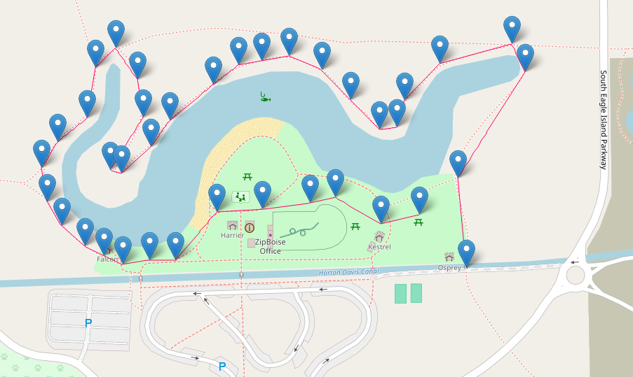

Meet at Eagle Island day use area at noon on Saturday, June 20th. Load up, tell our stories and walk to where we'll grill and eat.
Depending on what people are up for, we can hoof it from the west end of the parking lot to the east end, about a quarter mile. Or we can circle around the swimming area from the east end of the parking lot, it's a little under a mile and a half. Both routes meet the core objective journey from one point to a different point not visible from the start and both have an optional hill obscuring the destination.

In either case, the actual food eating will be at a picnic table in the park, something we'll procure on the day. Plan right now is to have a backup grill and seating in case the park is crowded and we don't snag a table. Forecast suggests the weather will be clear and warm.
Last year we gathered and shared food from our respective heritages. This year I want to expand on that idea of looking back. We each come from a long line of survivors. Men and women who endured much so that we could be where we are today. From the very first, stepping out of the darkness of pre-history, our ancestors journeyed towards a greater future. As Americans, that journey is especially recent. Especially defining. We are each the result of a journey and the will to undertake it. The will to leave what they knew behind. The will to endure. And the will to rebuild on the other side.
There are three pieces to what I'm proposing this year.
The date is June 21, which is a weekend this year. I don't know if Saturday or Sunday works best, happy to be flexible. Also this is very outdoors, so weather is much more of a thing than the winter solstice. I haven't found a place yet. If you have ideas, please pass them along. The hill is not essential, the ascent is a reference to our destiny in the stars as well as a physical challenge. Target is somewhere around 2-3 hours plus transport, understanding we have to descend assuming we don't hike to somewhere we can stage vehicles in advance. The celebration is just eating similar to 2025, but that's only because I don't know how to plan songs/dancing/any other festive things. If you have ideas for that, also very welcome. Similarly for anything kid-friendly to get them engaged.
Big change from last year, it might make sense to abridge all of the steps just to feel it out, see what carries the most meaning. E.g. cut out the hill and just walk from one parking lot to another.